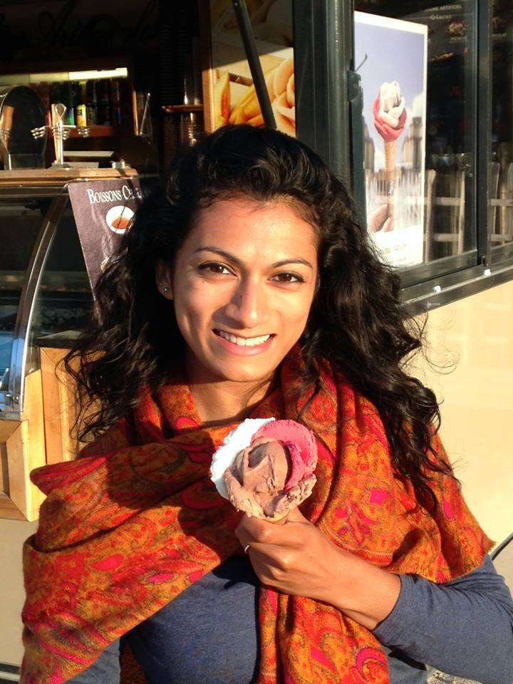
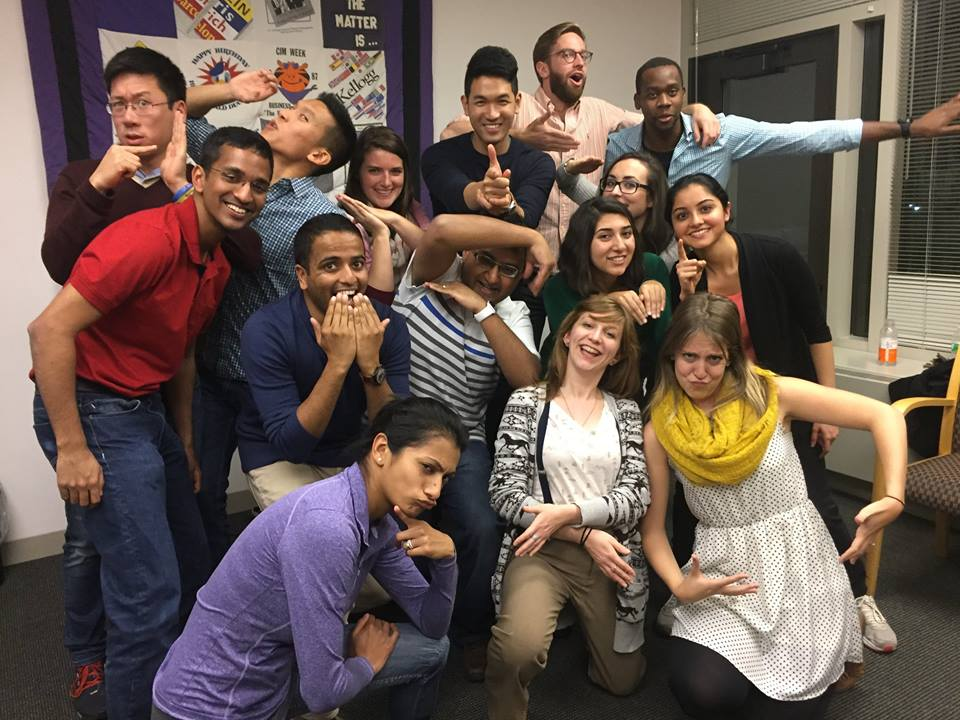
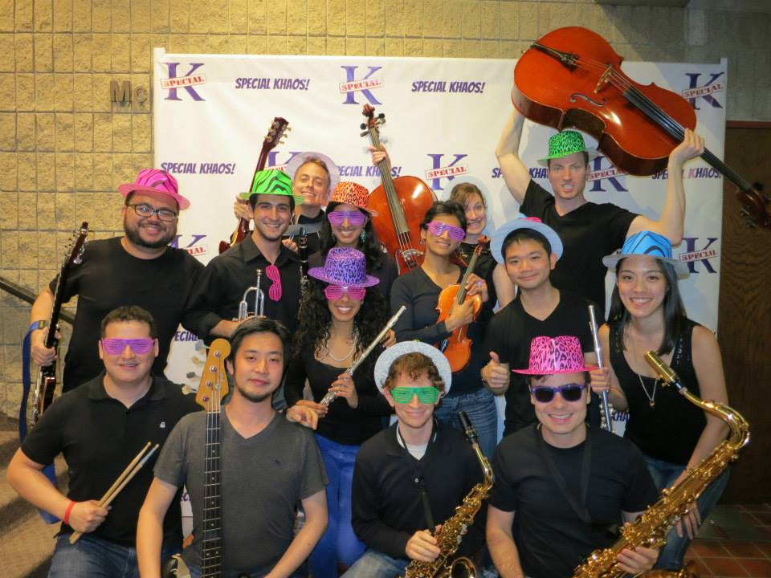
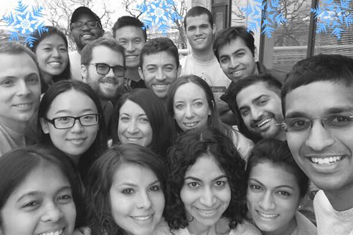
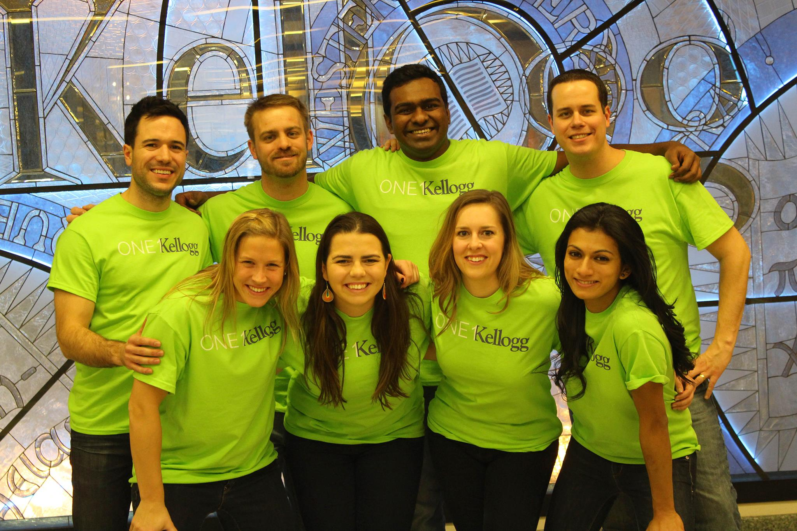

Elsa came to Kellogg excited to learn and connect through several Kellogg Clubs. She was 100% sold on joining the Improv Club. During the academic year she also joined the Special K! band, High Tech Club, and the Kellogg Student Association. Below is a bit more on these fun adventures:
After a couple quarters of Improv Classes, Elsa was eager to get more involved with the Improv Club. She is currently serving as the president of Improv Club. 
Elsa was looking for an opporunity to polish up her violin playing skills. And BAM! came along the opporunity - to join the Special K! band! 
Elsa cannot thank her second year Interview Prep Group leaders enough for their guidance, encouragement, and support throughout the recruiting process her first year at Kellogg. 
Prior to joining Kellogg, an alumni gave Elsa advice to connect with one alum every month. While this is great advice and seems easy enough to do, Elsa went two quarters without having quite built her alumni network. Elsa serves on the KSA board as the vice president of Alumni Relations to help students and alumni connect. 